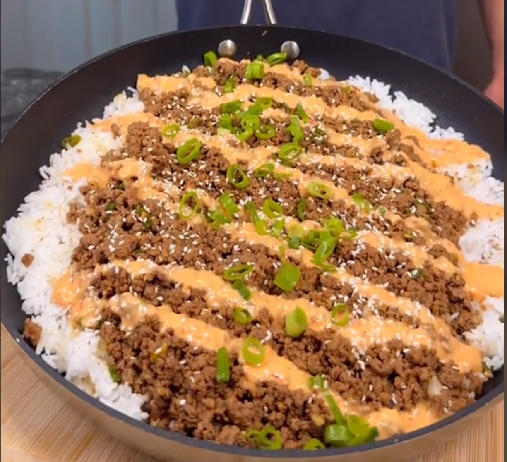

Korean-inspired Beef Bowl

Image sourced from the TikTok
Why Korean Beef Bowls?
This Korean Beef Bowl is quick to cook, and high in protein and flavour. I recommend adding extra vegetables and spice (Sriracha/Gochujang) to make this more nutritional and extra spicy.
Recipe sourced from this meal prep TikTok
Ingredients
Low Cal Sriracha Mayo
- 90 grams light Mayo
- 50 grams Sriracha
- Juice from ½ a lemon
- ½ teaspoon garlic powder
- 2 tablespoons water
- Salt (or none this is a salty meal)
Beef Marinade
- 2 teaspoons sesame oil
- Minced garlic (as much as you want in my opinion)
- Ginger (not on recipe, but I highly recommend)
- 30 grams brown sugar
- 80 grams soy sauce
- 20 grams gochujang
- Lean ground beef
Vegetables (toppings)
- Carrots
- Green onions
- Greens of choice
- Cucumbers
- Spinach
Others
- 1 cup of rice
- Sesame seeds
Steps to Make Dish
- Place all Low Cal Srircha Mayo ingredients into a bowl. Mix until a consistent mayo is formed.
- Place all Beef Marinade ingredients (excluding the beef itself) into a bowl. Mix until all ingredients are blended together.
- Optional vegetables. Cut cucumbers into slices; peel carrots into ribbons; finely chop green onions; wash greens of choice.
- Heat your pan to medium-high, add ground beef to the pan once at temperature.
Let the ground beef brown.
Once the ground beef is browned, add the marinade to the ground beef and mix it with the beef. Let the marinade reduce for additional flavour.
- Can add spinach to the beef so it wilts and you get more greens.
- Add toppings as desired.
Return to homepage